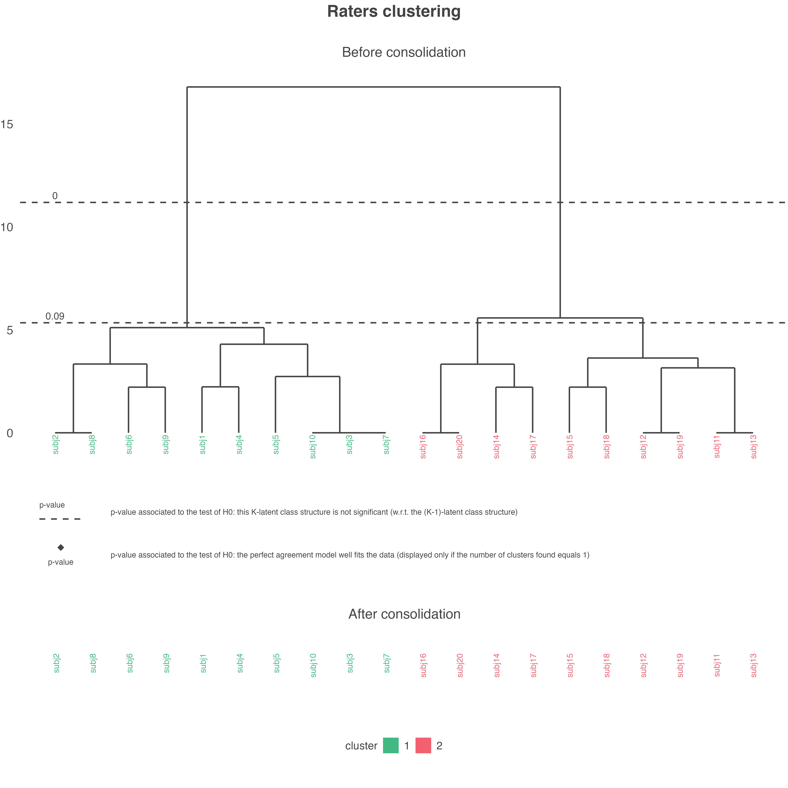
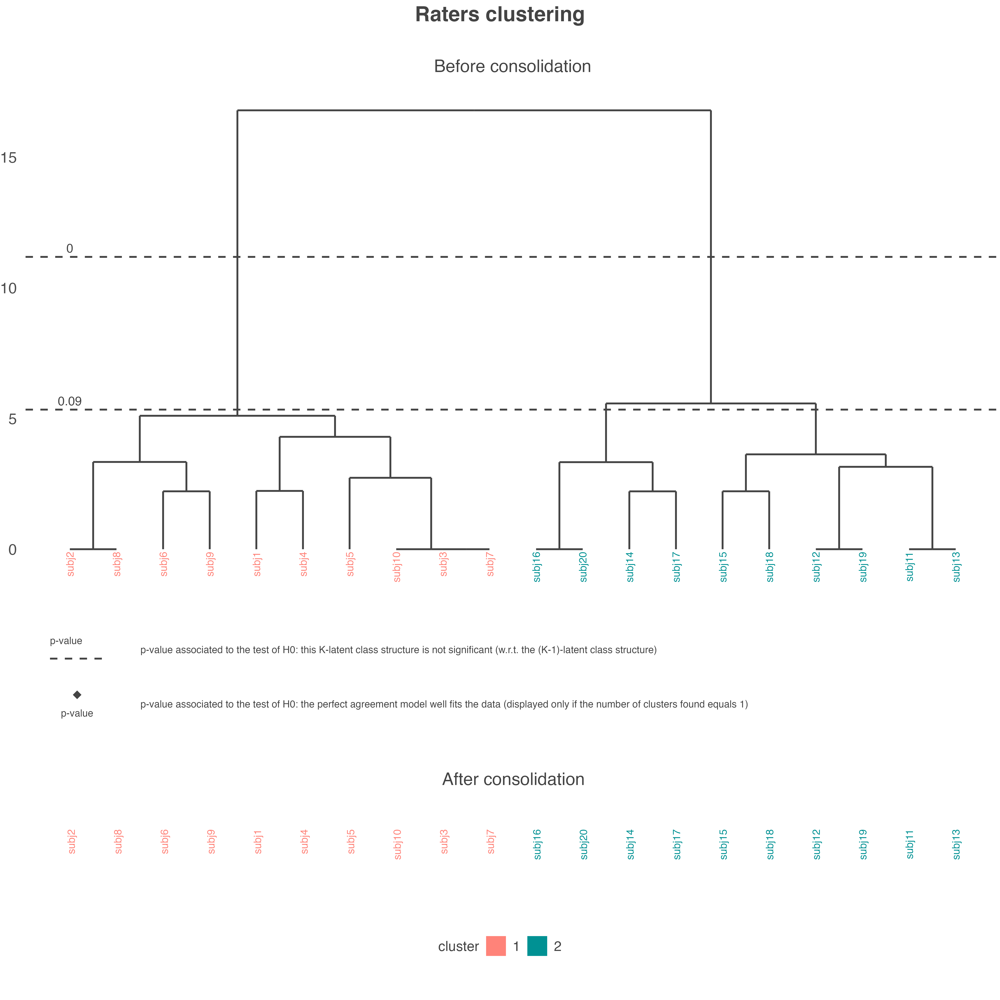
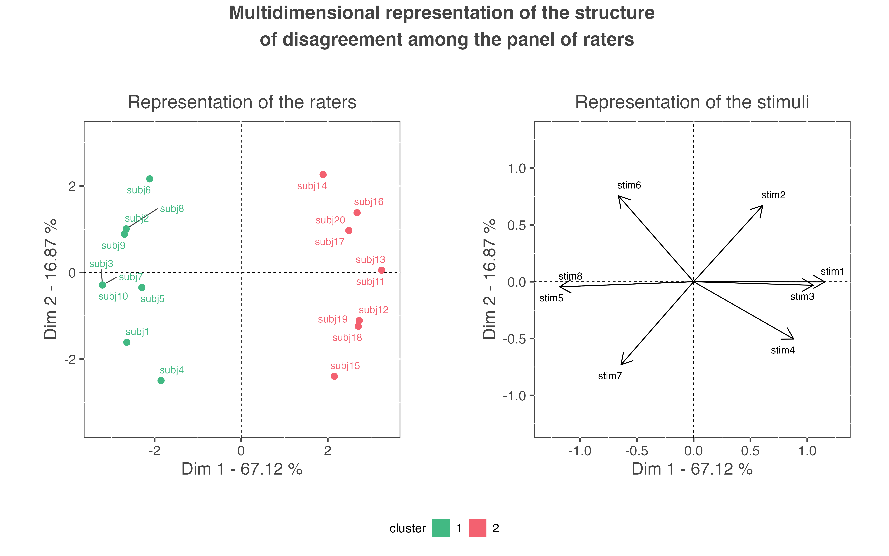
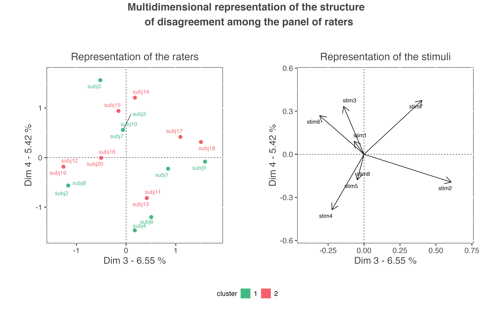

c-binary-ratings.Rmd
library(agreeclust)The get_agreeclust_binary() function of the package is able to deal with binary ratings. The function considers a logistic latent class regression modeling for the agreement-based unsupervised clustering of a set of binary ratings:
For implementing the cutting strategy of the dendrogram, the Likelihood-Ratio Test (LRT) is used as the statistic test to test the significance of the \((K+1)-\) latent class model w.r.t the \(K-\) latent class model.
The help page of the functions can be accessed with this code:
help(get_agreeclust_binary)To illustrate the outputs and graphs of the function, let’s use a small pedagogic data set named binary_data_for_example. This data set refers to the ratings of 8 stimuli provided by a panel of 20 raters. Ratings data are supplemented by covariates providing information about the stimuli and the raters. The columns 21, 22, 23, 24, and 25 provide information about the stimuli: Citrus fruits intensity (continuous), Vanilla intensity (continuous), Wood intensity (continuous), Lotus intensity (continuous), and Packaging which is either the current one or a prototype (categorical). The lines 9, 10, 11 provide information about the raters: Gender (categorical), Age bracket (categorical), Frequency of use (continuous). The code to import and visualize this data set is:
| subj1 | subj2 | subj3 | subj4 | subj5 | subj6 | subj7 | subj8 | subj9 | subj10 | subj11 | subj12 | subj13 | subj14 | subj15 | subj16 | subj17 | subj18 | subj19 | subj20 | citrus_fruits | vanilla | wood | lotus | packaging | |
|---|---|---|---|---|---|---|---|---|---|---|---|---|---|---|---|---|---|---|---|---|---|---|---|---|---|
| stim1 | 0 | 0 | 0 | 0 | 0 | 0 | 0 | 0 | 0 | 0 | 1 | 1 | 1 | 1 | 1 | 1 | 1 | 1 | 1 | 1 | 0 | 9 | 10 | 9 | current |
| stim2 | 0 | 0 | 0 | 0 | 0 | 1 | 0 | 0 | 1 | 0 | 1 | 0 | 1 | 1 | 0 | 1 | 1 | 1 | 0 | 1 | 1 | 2 | 9 | 2 | prototype |
| stim3 | 0 | 0 | 0 | 0 | 1 | 0 | 0 | 0 | 0 | 0 | 1 | 1 | 1 | 1 | 1 | 1 | 1 | 1 | 1 | 1 | 2 | 5 | 8 | 6 | current |
| stim4 | 0 | 0 | 0 | 1 | 0 | 0 | 0 | 0 | 0 | 0 | 1 | 1 | 1 | 0 | 1 | 1 | 0 | 1 | 1 | 1 | 6 | 4 | 4 | 7 | current |
| stim5 | 1 | 1 | 1 | 1 | 1 | 1 | 1 | 1 | 1 | 1 | 0 | 0 | 0 | 0 | 0 | 0 | 0 | 0 | 0 | 0 | 4 | 3 | 3 | 8 | prototype |
| stim6 | 0 | 1 | 1 | 0 | 1 | 1 | 1 | 1 | 1 | 1 | 0 | 0 | 0 | 1 | 0 | 1 | 0 | 0 | 0 | 1 | 6 | 8 | 6 | 9 | prototype |
| stim7 | 1 | 0 | 1 | 1 | 1 | 0 | 1 | 0 | 1 | 1 | 0 | 0 | 0 | 0 | 1 | 0 | 0 | 1 | 0 | 0 | 10 | 5 | 2 | 1 | current |
| stim8 | 1 | 1 | 1 | 1 | 1 | 1 | 1 | 1 | 1 | 1 | 0 | 0 | 0 | 0 | 0 | 0 | 0 | 0 | 0 | 0 | 9 | 6 | 1 | 5 | prototype |
| gender | female | female | male | female | female | male | female | female | female | female | male | male | male | female | male | male | male | female | male | male | NA | NA | NA | NA | NA |
| age | 21-30 | 21-30 | 21-30 | 21-30 | 21-30 | 21-30 | 21-30 | 21-30 | 21-30 | 21-30 | 21-30 | 21-30 | 31-40 | 51-60 | 51-60 | 21-30 | 21-30 | 31-40 | 21-30 | 41-50 | NA | NA | NA | NA | NA |
| freq_use | 10 | 9 | 7 | 8 | 9 | 8 | 7 | 9 | 4 | 8 | 1 | 2 | 4 | 3 | 5 | 3 | 3 | 4 | 3 | 2 | NA | NA | NA | NA | NA |
By default, the function implements in parallel the computation of the null LRT distribution for cutting the dendrogram (in this case, a file denoted TestDendrogram_processing.txt is automatically created in the working directory to access the processing status). Moreover, the function approximates by default the null LRT distribution by using the Satterthwaite’s approximation. Finally, the function uses by default the following other important arguments:
dta, specifying the name of the data set to be used;model = "rating ~ rater + stimulus", meaning that both the raters propensities and the stimuli propensities are taken into account when modeling the ratings data. Other available possibilities are "rating ~ rater" (in this case, the disagreement index is similar to the Cohen’s kappa \(\kappa\)) or "rating ~ 1" (in this case, the disagreement index is similar to the simple matching coefficient);consol = TRUE, meaning that the partition of raters is consolidated using a partitioning algorithm;id_info_rater = NULL, type_info_rater = NULL, id_info_stim = NULL, and type_info_stim = NULL, meaning that no covariates about either the raters nor the stimuli are available in the data set.As the data set contains covariates about the raters and the stimuli, the last arguments have to be modified in the following way:
id_info_rater = c(9, 10, 11), meaning that the 3 covariates about the raters are accessible in lines 9, 10, and 11 of the data set;type_info_rater = c(rep("cat", 2), "cont"), meaning that the 2 first covariates about the raters are categorical and the last one continuous;id_info_stim = c(21, 22, 23, 24, 25), meaning that the 5 covariates about the stimuli are accessible in columns 21, 22, 23, 24, and 25 of the data set;type_info_stim = c(rep("cont", 4), "cat"), meaning that the 4 first covariates about the stimuli are continuous and that the last one is categorical.Finally, the code to perform the clustering is:
res_pedag <- get_agreeclust_bin(dta = binary_data_for_example,
id_info_rater = 9 : nrow(binary_data_for_example),
type_info_rater = c(rep("cat", 2), "cont"),
id_info_stim = 21 : ncol(binary_data_for_example),
type_info_stim = c(rep("cont", 4), "cat")
)The first object returned by the function is the matrix containing the profiles of deviance residuals. The larger the residual (in absolute value), the larger the departure from the situation of perfect agreement (cf. model (2)). This object can be accessed with this code:
res_pedag$profiles_residuals#> stim1 stim2 stim3 stim4 stim5 stim6 stim7 stim8
#> subj1 -1.0 -0.9 -1.1 -0.9 1.4 -1.1 1.5 1.4
#> subj2 -1.0 -0.9 -1.1 -0.9 1.4 1.3 -0.9 1.4
#> subj3 -1.2 -1.1 -1.3 -1.1 1.2 1.1 1.3 1.2
#> subj4 -1.2 -1.1 -1.3 1.3 1.2 -1.3 1.3 1.2
#> subj5 -1.4 -1.3 0.9 -1.3 1.0 0.9 1.0 1.0
#> subj6 -1.2 1.3 -1.3 -1.1 1.2 1.1 -1.1 1.2
#> subj7 -1.2 -1.1 -1.3 -1.1 1.2 1.1 1.3 1.2
#> subj8 -1.0 -0.9 -1.1 -0.9 1.4 1.3 -0.9 1.4
#> subj9 -1.4 1.0 -1.5 -1.3 1.0 0.9 1.0 1.0
#> subj10 -1.2 -1.1 -1.3 -1.1 1.2 1.1 1.3 1.2
#> subj11 1.2 1.3 1.1 1.3 -1.2 -1.3 -1.1 -1.2
#> subj12 1.4 -0.9 1.3 1.5 -1.0 -1.1 -0.9 -1.0
#> subj13 1.2 1.3 1.1 1.3 -1.2 -1.3 -1.1 -1.2
#> subj14 1.2 1.3 1.1 -1.1 -1.2 1.1 -1.1 -1.2
#> subj15 1.2 -1.1 1.1 1.3 -1.2 -1.3 1.3 -1.2
#> subj16 1.0 1.0 0.9 1.0 -1.4 0.9 -1.3 -1.4
#> subj17 1.4 1.5 1.3 -0.9 -1.0 -1.1 -0.9 -1.0
#> subj18 1.0 1.0 0.9 1.0 -1.4 -1.5 1.0 -1.4
#> subj19 1.4 -0.9 1.3 1.5 -1.0 -1.1 -0.9 -1.0
#> subj20 1.0 1.0 0.9 1.0 -1.4 0.9 -1.3 -1.4The second object returned by the function is the disagreement matrix between raters. The larger the value in this matrix, the more important the disagreement between the two corresponding raters. This object can be accessed with this code:
res_pedag$mat_disag#> subj1 subj2 subj3 subj4 subj5 subj6 subj7 subj8 subj9 subj10 subj11
#> subj1 0.0 3.4 2.2 2.2 2.9 4.0 2.2 3.4 2.9 2.2 6.2
#> subj2 3.4 0.0 2.2 4.0 2.9 2.2 2.2 0.0 2.9 2.2 6.2
#> subj3 2.2 2.2 0.0 3.3 2.2 3.3 0.0 2.2 2.2 0.0 6.7
#> subj4 2.2 4.0 3.3 0.0 4.0 4.7 3.3 4.0 4.0 3.3 5.8
#> subj5 2.9 2.9 2.2 4.0 0.0 4.0 2.2 2.9 3.4 2.2 6.2
#> subj6 4.0 2.2 3.3 4.7 4.0 0.0 3.3 2.2 2.2 3.3 5.8
#> subj7 2.2 2.2 0.0 3.3 2.2 3.3 0.0 2.2 2.2 0.0 6.7
#> subj8 3.4 0.0 2.2 4.0 2.9 2.2 2.2 0.0 2.9 2.2 6.2
#> subj9 2.9 2.9 2.2 4.0 3.4 2.2 2.2 2.9 0.0 2.2 6.2
#> subj10 2.2 2.2 0.0 3.3 2.2 3.3 0.0 2.2 2.2 0.0 6.7
#> subj11 6.2 6.2 6.7 5.8 6.2 5.8 6.7 6.2 6.2 6.7 0.0
#> subj12 5.8 5.8 6.2 5.2 5.6 6.2 6.2 5.8 6.5 6.2 2.2
#> subj13 6.2 6.2 6.7 5.8 6.2 5.8 6.7 6.2 6.2 6.7 0.0
#> subj14 6.2 5.2 5.8 6.7 5.2 4.7 5.8 5.2 5.2 5.8 3.3
#> subj15 5.2 6.2 5.8 4.7 5.2 6.7 5.8 6.2 6.2 5.8 3.3
#> subj16 6.5 5.6 6.2 6.2 5.8 5.2 6.2 5.6 5.8 6.2 2.2
#> subj17 5.8 5.8 6.2 6.2 5.6 5.2 6.2 5.8 5.6 6.2 2.2
#> subj18 5.6 6.5 6.2 5.2 5.8 6.2 6.2 6.5 5.8 6.2 2.2
#> subj19 5.8 5.8 6.2 5.2 5.6 6.2 6.2 5.8 6.5 6.2 2.2
#> subj20 6.5 5.6 6.2 6.2 5.8 5.2 6.2 5.6 5.8 6.2 2.2
#> subj12 subj13 subj14 subj15 subj16 subj17 subj18 subj19 subj20
#> subj1 5.8 6.2 6.2 5.2 6.5 5.8 5.6 5.8 6.5
#> subj2 5.8 6.2 5.2 6.2 5.6 5.8 6.5 5.8 5.6
#> subj3 6.2 6.7 5.8 5.8 6.2 6.2 6.2 6.2 6.2
#> subj4 5.2 5.8 6.7 4.7 6.2 6.2 5.2 5.2 6.2
#> subj5 5.6 6.2 5.2 5.2 5.8 5.6 5.8 5.6 5.8
#> subj6 6.2 5.8 4.7 6.7 5.2 5.2 6.2 6.2 5.2
#> subj7 6.2 6.7 5.8 5.8 6.2 6.2 6.2 6.2 6.2
#> subj8 5.8 6.2 5.2 6.2 5.6 5.8 6.5 5.8 5.6
#> subj9 6.5 6.2 5.2 6.2 5.8 5.6 5.8 6.5 5.8
#> subj10 6.2 6.7 5.8 5.8 6.2 6.2 6.2 6.2 6.2
#> subj11 2.2 0.0 3.3 3.3 2.2 2.2 2.2 2.2 2.2
#> subj12 0.0 2.2 4.0 2.2 2.9 3.4 2.9 0.0 2.9
#> subj13 2.2 0.0 3.3 3.3 2.2 2.2 2.2 2.2 2.2
#> subj14 4.0 3.3 0.0 4.7 2.2 2.2 4.0 4.0 2.2
#> subj15 2.2 3.3 4.7 0.0 4.0 4.0 2.2 2.2 4.0
#> subj16 2.9 2.2 2.2 4.0 0.0 2.9 3.4 2.9 0.0
#> subj17 3.4 2.2 2.2 4.0 2.9 0.0 2.9 3.4 2.9
#> subj18 2.9 2.2 4.0 2.2 3.4 2.9 0.0 2.9 3.4
#> subj19 0.0 2.2 4.0 2.2 2.9 3.4 2.9 0.0 2.9
#> subj20 2.9 2.2 2.2 4.0 0.0 2.9 3.4 2.9 0.0The first graph created by the function shows the clustering process applied to this disagreement matrix. The dendrogram representing the structure of disagreement is presented at the top of the graph. The \(p-\)values associated to the different levels of its hierarchy show that two clusters of raters exist among the panel, as the \(3-\) latent class model is not significant w.r.t the \(2-\) latent class model. The consolidation step, whose the result is presented at the bottom of the graph, did not modify the partition of raters. Finally, we can say that this panel is composed of two disagreed clusters: the first ten raters (cluster 1) against the last ten raters (cluster 2).
plot_agreeclust(res_pedag, choice = "seg", col_clust = c("#42B983", "#F36170"))
The clusters can be colored according to new colors in this plot. To do so, the following code is used:
plot_agreeclust(res_pedag, choice = "seg", col_clust = c("#FF8379", "#009193"))
The results of the clustering process (\(p-\)values associated to the test of the significance of each \(K-\) clusters structure, number of clusters of raters found, and the final partition of raters) can be accessed with this code:
res_pedag$pval_dendro
#> [1] 0.00 0.09
res_pedag$nb_clust_found
#> [1] 2
res_pedag$partition # consolidated in this example
#> subj1 subj2 subj3 subj4 subj5 subj6 subj7 subj8 subj9 subj10 subj11
#> 1 1 1 1 1 1 1 1 1 1 2
#> subj12 subj13 subj14 subj15 subj16 subj17 subj18 subj19 subj20
#> 2 2 2 2 2 2 2 2 2The second graph created by the function shows the multidimensional representation of the structure of disagreement observed among the panel. This representation is obtained by submitting the \(20 \times 8\) matrix contained in the object res_pedag$profiles_residuals to a Principal Components Analysis (PCA). PCA provides two main representations: a representation of the individuals (i.e. a representation of the 20 raters) and a representation of the variables (i.e. a representation of the 8 stimuli). On the representation of the raters, two raters are distant if they present a high disagreement. As these two representations are related to each other, the representation of the raters has to be interpreted regarding to the representation of the stimuli. This may be expressed as follows: raters are on the same side as the stimuli for which they gave a ‘1’ rating, and opposite of the stimuli for which they gave a ‘0’ rating.
In the present example, cluster 1 is characterized by ‘1’ ratings for stimuli stim5, stim6, stim7, and stim8; and by ‘0’ ratings for stimuli stim1, stim2, stim3, and stim4. On the contrary, cluster 2 is characterized by ‘0’ ratings for stimuli stim5, stim6, stim7, and stim8; and by ‘1’ ratings for stimuli stim1, stim2, stim3, and stim4.

In the present example, the percentage of variability explained by the first factorial plane is \(67.12\%+16.87\%=83.99\%\). This percentage is high enough to interpret the structure of disagreement according to this first factorial plane only. However, is some situations, the user will have to interpret more dimensions of disagreement. To do so, the user can access all the results of the PCA as provided by the PCA function of the FactoMineR package (cf. help page of this function if needed). These results can be accessed with this code:
res_pedag$res_pca
#> **Results for the Principal Component Analysis (PCA)**
#> The analysis was performed on 20 individuals, described by 8 variables
#> *The results are available in the following objects:
#>
#> name description
#> 1 "$eig" "eigenvalues"
#> 2 "$var" "results for the variables"
#> 3 "$var$coord" "coord. for the variables"
#> 4 "$var$cor" "correlations variables - dimensions"
#> 5 "$var$cos2" "cos2 for the variables"
#> 6 "$var$contrib" "contributions of the variables"
#> 7 "$ind" "results for the individuals"
#> 8 "$ind$coord" "coord. for the individuals"
#> 9 "$ind$cos2" "cos2 for the individuals"
#> 10 "$ind$contrib" "contributions of the individuals"
#> 11 "$call" "summary statistics"
#> 12 "$call$centre" "mean of the variables"
#> 13 "$call$ecart.type" "standard error of the variables"
#> 14 "$call$row.w" "weights for the individuals"
#> 15 "$call$col.w" "weights for the variables"We can draw a bar plot with the eigenvalues of PCA with the following code:
This graph allows to detect the number of dimensions interesting for the interpretation of the structure of disagreement. The user can then plot the graph for the other interesting dimensions, let’s say the third and the fourth dimensions (even if in our case, they should not be interpreted):
plot_agreeclust(res_pedag, choice = "mul", axis = c(3, 4))
The plot_agreeclust() allows to plot the multidimensional representation of the structure of disagreement in an interactive way. By moving the cursor on a point, several pieces of information are printed:
plot_agreeclust(res_pedag, choice = "mul", interact = TRUE)Finally, the function provides an automatic description of the clusters of raters. This description can be accessed with this code:
res_pedag$charact_clustAs shown on the following output, cluster 1 is composed of 10 raters (50/% of the panel) and the most representative rater of this cluster is subj7. In this cluster, and relatively to the average, women, raters between 21 and 30 years old, and raters who often use the product are overrepresented; while men are underrepresented. Relatively to the average, raters of this cluster present a higher propensity to give a ‘1’ rating to stimuli presenting a high intensity of citrus fruits flavor and to stimuli with the prototype packaging; while they present a lower propensity to give a ‘1’ rating to stimuli presenting a high intensity of wood flavor and to stimuli with the current packaging:
#> $nb.raters
#> [1] 10
#>
#> $percent.of.panel
#> [1] 50
#>
#> $parangon
#> [1] "subj7"
#>
#> $info.raters
#> information sign statistic test pvalue
#> 1 freq_use + 0.0001377278
#> 2 gender=female + 0.0120537357
#> 3 age=21-30 + 0.0162538700
#> 4 gender=male - 0.0120537357
#>
#> $info.stim
#> information sign statistic test pvalue
#> 2 citrus_fruits + 6.92141577015648e-10
#> 5 packaging - prototype + 7.80028730073731e-10
#> 4 packaging - current - 7.80028730073731e-10
#> 3 wood - 5.91224464202939e-12As there is only two clusters of raters in this example, the interpretation of cluster 2 is the opposite to those of cluster 1:
#> $nb.raters
#> [1] 10
#>
#> $percent.of.panel
#> [1] 50
#>
#> $parangon
#> [1] "subj13"
#>
#> $info.raters
#> information sign statistic test pvalue
#> 2 gender=male + 0.0120537357
#> 3 age=21-30 - 0.0162538700
#> 4 gender=female - 0.0120537357
#> 1 freq_use - 0.0001377278
#>
#> $info.stim
#> information sign statistic test pvalue
#> 3 wood + 5.91224464202939e-12
#> 4 packaging - current + 7.80028730073731e-10
#> 5 packaging - prototype - 7.80028730073731e-10
#> 2 citrus_fruits - 6.92141577015648e-10A real data set of binary ratings is also available in the help page of the package. This data set corresponds to data obtained during an experiment where 39 videos of culinary gestures (oysters opening gestures) have been evaluated on a binary scale, by 72 participants, according to their representativeness of the complex concept of ‘good gesture’ (1) or not (0). However, as the computation of the tests for the significance of the levels of the dendrogram can be time-consuming, its analysis is not presented in this vignette. This analysis can be accessed with this code: